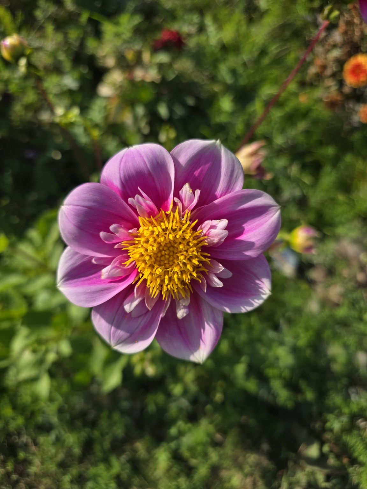

Named varieties
The Collection
Our growing collection includes favourites such as Mystery Day, Motto, Crazy Love, Labyrinth, Thomas Edison and more.
We're turning five acres, a lot of ideas, and more than a little dirt into a family farm — one seed, cutting and ridiculous experiment at a time.
Named varieties, winter propagation and hundreds of seed-grown plants are becoming the heart of Seed What Happens. We're starting deliberately, learning what performs here, and building toward future tuber and plant sales.

Our growing collection includes favourites such as Mystery Day, Motto, Crazy Love, Labyrinth, Thomas Edison and more.
Cuttings, lights, soil blocks and overwintering trials let us learn how far a great plant can go without rushing the process.
Every dahlia seed is a genetic roll of the dice. Most won't become keepers. A few might become something worth naming.
We're starting with roughly five acres on Vancouver Island: wet ground, blackberries, broom, alder, ponds, a creek and plenty of work ahead.
That's the point. Seed What Happens isn't a story about buying a finished farm. It's about figuring out what this land can become and documenting the wins, mistakes and experiments along the way.
Flowers are becoming a major part of that story, but the bigger idea is simple: start where you are, plant something, learn from it — and seed what happens.
Come AlongThe finished farm is years away. Instead of hiding that, we're documenting it.
Blackberries, Scotch broom and dense growth are being tackled piece by piece while we work with the site's drainage and existing ecosystems.
We're improving soil, establishing growing areas and learning what actually works on our property rather than designing the farm on paper alone.
The goal isn't to do everything at once. It's to build a productive, beautiful farm that gets better every season.
As our seed-grown dahlias bloom, we'll photograph, number and evaluate them. The best will be grown again before any decision is made about keeping or naming them.
Future evaluation card: colour, form, stem strength, plant habit and season notes.
Not every pretty first-year bloom makes the cut. We'll show that process too.
Once the seedlings start flowering, this section can become a living gallery of the most promising plants.
We're keeping the first sale small. Join the list for farm updates and to hear when our 2027 tuber availability is announced.
The website is home base. The day-to-day mess, experiments, progress and flowers happen on social.